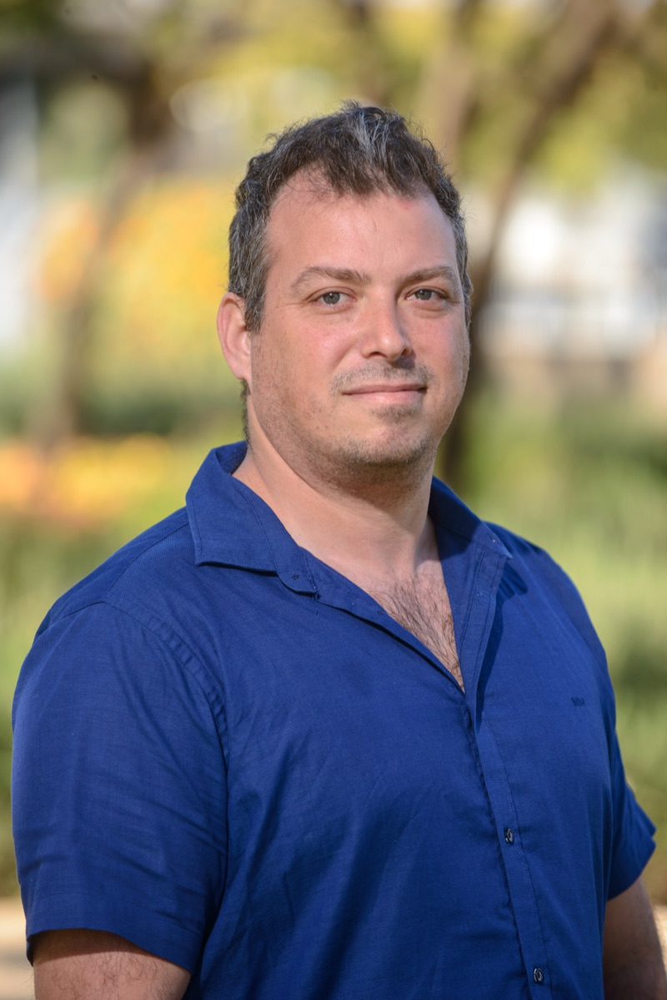

MLAIA Data Science
Applied AI scientists for signals, clinical data and forecasting.
Measured before it's deployed.
Which challenge brings you here?
Three fields, one method · synthetic signals, illustrative
Acoustics, classical signal processing and machine learning. From calibrated measurements to reliable algorithms on real devices.
Audio & acoustics → For MedTech R&D teams and hospitals Medical AIClinical data, images and biosignals. Scientific rigor from research question to evaluation and integration.
Medical AI → For sales, operations and planning teams Prediction & causal analysisForecast bookings, revenue, churn and inventory. Evaluate the impact of actions through causal analysis.
Prediction & causal analysis →Illustrative, synthetic signals, not client data. Amber is the raw measurement, blue is the model output: a filtered tone, detected heartbeats, and a weekly forecast with its 80% band. Drag the slider to add noise to all three. Choose a channel to open that practice.
01Why one firm
Three fields. One method.
Signals, clinical cohorts and demand series are all hard data. Each one needs calibration, honest validation and clear uncertainty.
- 01Measure
Start from the data as it is: the sensor, the patient records, the sales history.
- 02Validate
Agree on the measures first. Test against a baseline and current practice.
- 03Deploy
Ship to the device, the clinical workflow or the planning team, and hand it over.
- AudioNeural-network active noise control, plus models running on Android, iOS, earphones and drones.
- MedicalGeometrix reached a clinical-trial-ready MVP in a short time, running in real time on simple hardware.
- PredictionForecasts are backtested over time, and causal analysis tests which actions really change the outcome.
Try a demo: Play with sound → Prediction & what-if →
02Testimonials
In our clients' words.
Ten clients, grouped by field. Each card shows a short excerpt; open it to read the full quote.
Audio & acoustics
-
Audio & acoustics
"I would like to express my sincere gratitude for your valuable contributions to Silentium, specifically in the fields of digital signal processing, audio, machine learning, and data science."
Read full quoteShow less: Tzvika Fridman
"I would like to express my sincere gratitude for your valuable contributions to Silentium, specifically in the fields of digital signal processing, audio, machine learning, and data science. Your expertise and vast knowledge have been instrumental in establishing our AI infrastructure. We look forward to continued engagement and collaboration towards promoting our innovative AI technologies."
Tzvika FridmanCTO, Silentium -
Audio & acoustics
"We were looking for a partner who could take our vision for post-trauma treatment and turn it into a precise AI algorithm running in real-time on simple hardware — a significant technological challenge."
Read full quoteShow less: Daniel Shwarts
"We were looking for a partner who could take our vision for post-trauma treatment and turn it into a precise AI algorithm running in real-time on simple hardware — a significant technological challenge. At MLAIA, we found much more than a vendor! Yochai, Yedidia, and Amit worked with us shoulder to shoulder, with absolute commitment and exceptional availability, as if they were an integral part of our team. Their professionalism and deep understanding of Deep Learning enabled us to reach a clinical-trial-ready MVP in a short time with optimal resource utilization. They filled in our missing knowledge and became true partners."
Daniel ShwartsVP R&D, Geometrix -
Audio & acoustics
"Yochai and his team, who combine expertise in both physics and everything related to AI, advanced us significantly."
Read full quoteShow less: Oz Ganor
"At the beginning of our journey, when we needed significant reinforcement in the field of algorithms and AI, we turned to MLAIA. Yochai and his team, who combine expertise in both physics and everything related to AI, advanced us significantly. Beyond their professionalism, the human touch that accompanies the company undoubtedly created an impact. Thank you!"
Oz GanorCOO, SkyPulse
Medical
-
Medical
"Your collaboration, fresh insights, scientific rigor, and efficient work methods have significantly contributed to our advancements in such a short time."
Read full quoteShow less: Eliav Shaked
"I am truly impressed by the innovative ideas and rapid progress your team has made while collaborating with our great team here at RETISPEC. Your collaboration, fresh insights, scientific rigor, and efficient work methods have significantly contributed to our advancements in such a short time. I am excited to see how our partnership continues to flourish, and I am grateful for the expertise you bring to our projects."
Eliav ShakedCEO, RETISPEC -
Medical
"Your leadership, strategic thinking, and excellent communication skills were instrumental in successfully executing this project."
Read full quoteShow less: Dr. Gil Levy
"I wanted to take a moment to recognize your exceptional work on managing the 'Sand box' project. Your leadership, strategic thinking, and excellent communication skills were instrumental in successfully executing this project."
Dr. Gil LevyHead of Innovation, Assuta Ashdod Medical Center -
Medical
"This holistic approach consistently yields insights that are both advanced and fully leverage the potential of the data, while remaining conservative and reliable enough that I can fully trust the process and the results."
Read full quoteShow less: Hagay Drori
"I greatly enjoy working with MLAIA. Their breadth and depth of understanding in data analysis is truly impressive, and they do not limit themselves to data alone: they dive into the underlying physics and any other aspect needed to properly solve the problem. This holistic approach consistently yields insights that are both advanced and fully leverage the potential of the data, while remaining conservative and reliable enough that I can fully trust the process and the results."
Hagay DroriCo-Founder, VP R&D, PatenSee -
Medical
"Their ability to quickly understand complex technical challenges, while maintaining a holistic view of the entire system—from data and models to deployment and business impact—sets them apart."
Read full quoteShow less: Shai Policker
"We have been working with MLAIA Data Science on several projects since their establishment, and we highly value the team's professionalism, agility, creativity, and strong sense of ownership. Their ability to quickly understand complex technical challenges, while maintaining a holistic view of the entire system—from data and models to deployment and business impact—sets them apart. They consistently deliver high-quality, scalable solutions, and their combination of deep technical expertise with strong business acumen has proven to be a significant asset to our portfolio companies, accelerating development and driving measurable impact."
Shai PolickerCEO, Edge Medical Venture
Prediction
-
Prediction
"From understanding the business problem, through deep analysis involving complex analytics, and all the way to top-level data science, resulting in outstanding models that actually solve real-world problems."
Read full quoteShow less: Roy Green
"It's so hard to find data professionals who truly understand the data in depth, across all its layers. Until we met Yohai, who not only met but exceeded all expectations. From understanding the business problem, through deep analysis involving complex analytics, and all the way to top-level data science, resulting in outstanding models that actually solve real-world problems. All of this was done with excellent and enjoyable communication, creativity, flexibility in thinking, and a true sense of partnership along the way."
Roy GreenVP R&D, Quago
Working with MLAIA
-
Working with MLAIA
"The ability to contribute great value in short and long-term endeavors, along with your extensive scientific knowledge in general and in particular in machine learning and data science methods are a great contribution to our success."
Read full quoteShow less: Yossi Azulai
"I wanted to express my deep appreciation for your contribution to success of our R&D. The ability to contribute great value in short and long-term endeavors, along with your extensive scientific knowledge in general and in particular in machine learning and data science methods are a great contribution to our success. Wishing to continue this fruitful journey."
Yossi AzulaiCEO, APPSCENT Ltd. -
Working with MLAIA
"Professionalism builds infrastructure, creativity gives it unique value, and when you add to that a commitment to the value and meaning of Will-I-Am, it boils down to one word - MLAIA!"
Read full quoteShow less: Efrat Bar-Or
"Professionalism builds infrastructure, creativity gives it unique value, and when you add to that a commitment to the value and meaning of Will-I-Am, it boils down to one word - MLAIA! Thank you!"
Efrat Bar-OrCEO, Will-IAm
03Companies we've worked with

04About
Dr. Yochai Edlitz
Founder & CEO, MLAIA
Dr. Yochai Edlitz brings 20+ years of R&D leadership across defense intelligence, academic research, and enterprise AI. With a Ph.D. from the Weizmann Institute and experience leading elite IDF technology units, he founded MLAIA to bridge the gap between cutting-edge research and production-ready AI systems.
MLAIA brings three specialist practices together: audio and acoustics, medical AI, and prediction and causal analysis. Data engineering and edge deployment connect the work across domains.
We work with enterprises, startups and research teams, from defining the problem to evaluating a model and planning its deployment.
- Ph.D. — Weizmann Institute of Science
- 20+ years R&D leadership
- IDF Elite Intelligence & Tech Units
- Published patents & papers in top-tier journals
- Multiple patents in signal processing & ML
05Got Questions?
Frequently Asked Questions
What services does MLAIA provide?
MLAIA has three practices: audio and acoustics AI (signal processing, sound and vibration models, on-device AI), medical and clinical AI (clinical prediction models, validation and imaging), and forecasting and causal analysis (demand forecasting, churn and the effect of actions). Every model is measured before it is deployed.
What industries does MLAIA serve?
MLAIA works with medical device companies, hospitals and digital health teams; hearing, audio, defense and industrial sensing companies; and retail, distribution and SaaS businesses that need forecasts. Each project is adapted to the field's data, compliance and operational requirements.
Where is MLAIA located?
MLAIA is based in Yavne, Israel, and serves clients worldwide. The company provides remote and on-site consulting engagements across Israel, the United States, and Europe.
What is data science consulting?
Data science consulting means partnering with an expert team to identify AI opportunities in your business, build and deploy machine learning models, and turn raw data into actionable insights. MLAIA acts as an embedded technical partner, from problem definition through production deployment.
How can AI help my business?
AI can automate repetitive tasks, predict customer behavior, detect anomalies, personalize experiences, and optimize complex operations. MLAIA helps businesses identify high-value AI applications and implements production-ready solutions that deliver measurable ROI, not just prototypes.
Does MLAIA work with startups?
Yes. MLAIA works with companies of all sizes, from early-stage startups to large enterprises. For startups, MLAIA provides senior AI expertise without the cost of full-time hires, helping build scalable ML foundations quickly and efficiently.
What makes MLAIA different from other AI consulting firms?
MLAIA combines academic-level research with hands-on production engineering. All three practices share one method: measure the signal or data, validate honestly, then deploy. Engagements span research, evaluation and production engineering.
Can MLAIA help with audio and signal processing?
Yes. Audio and signal processing AI is one of MLAIA's core specializations. Services include acoustic event detection, voice analysis, noise reduction, speech recognition adaptation, real-time DSP pipelines, and ML models for industrial, defense, and medical audio applications.
Ready to Start?
Let's Take Your Data
from Insight to Impact
Tell us about your data challenge. MLAIA — Machine Learning & AI Approach — will design the solution.